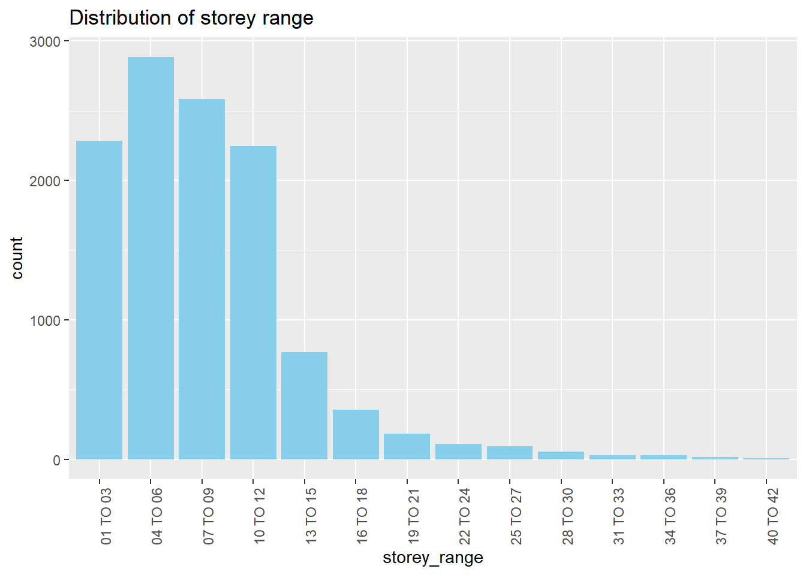
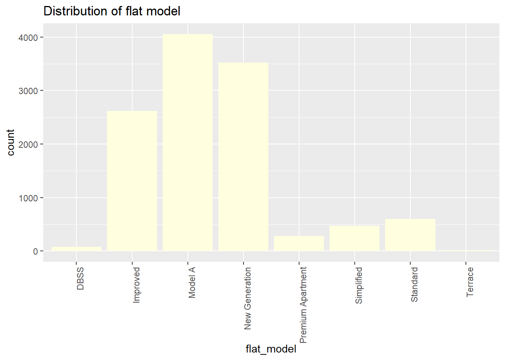
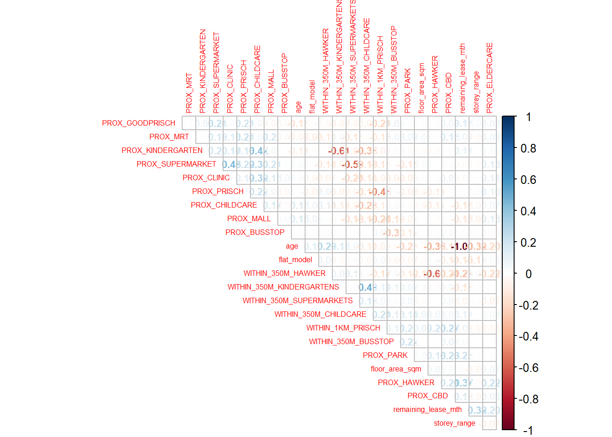
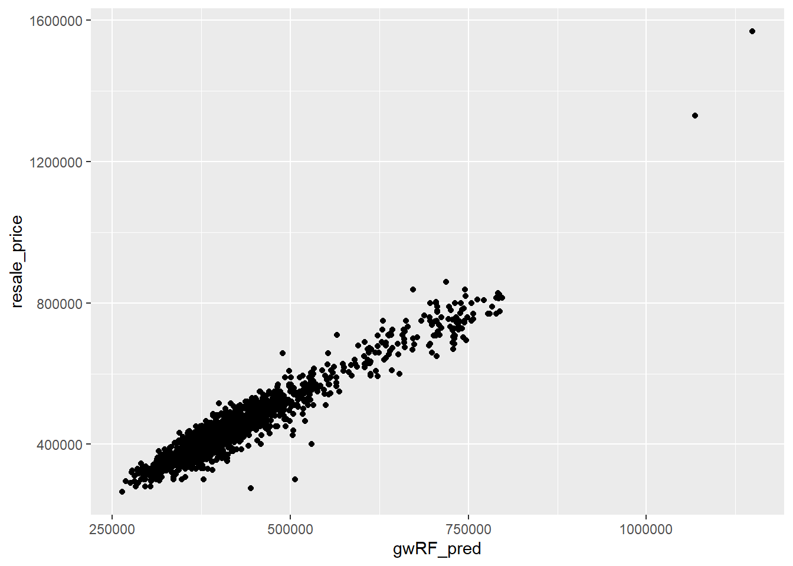

pacman::p_load(tidyverse, sf, GWmodel, SpatialML, tmap, rsample, Metrics, httr, jsonlite, rvest, fastDummies, corrplot, olsrr)Take-home Exercise 3
Take-home Exercise 3: Predicting HDB Resale Prices with Geographically Weighted Machine Learning Methods
1. Setting the Scene
Housing is a sign of household wealth. It is a major investment for most people and its price is affected by several factors that can be global in nature such as the general economy of a country, inflation rate or are factors specific to the nature of the property which can be further divided to structural and locational factors. Structural variables are related to the property such as the size, fitting, tenure while the locational variables are related to the neighbourhood of the property such as proximity to childcare services, public transport and shopping centres.
Conventionally, predictive models for housing resale prices were built by using the Ordinary Least Square (OLS) method. However, this method failed to take into consideration that spatial autocorrelation and spatial heterogeneity exist in geographic data sets such as housing transactions. With the existence of spatial autocorrelation, the OLS estimation of predictive housing resale pricing models could lead to biased, inconsistent, or inefficient results (Anselin 1998). In view of this limitation, Geographical Weighted Models were introduced to better calibrate predictive models for housing resale prices.
2. The Task
In this take-home exercise, we will calibrate a predictive model to predict HDB resale prices between July-September 2024 by using HDB resale transaction records in 2023.
3. The Data
The following datasets will be used:
Aspatial Data:
- HDB Resale Flat Prices from Data.gov.sg: A list of HDB resale transacted prices in Singapore from Jan 2017 onwards. In this exercise, our focus will be on 3-room flat types, given the increasing resale price of 3-room HDB flats in recent years.
Geospatial dataset:
URA’s Master Plan 2019 Subzone Boundary from Data.gov.sg
Locational factors with geographic coordinates from Data.gov.sg
S/N Data 1 Eldercare: List of eldercare in Singapore 2 Hawker Centre: List of hawker centres in Singapore 3 Parks: List of parks in Singapore 4 Supermarket: List of supermarkets in Singapore 5 CHAS clinics: List of CHAS clinics in Singapore 6 Childcare service: List of childcare services in Singapore 7 Kindergartens: List of kindergartens in Singapore Locational factors with geographic coordinates from Datamall.lta.gov.sg:
S/N Data 1 MRT data is a list of MRT/LRT stations in Singapore with the station names and codes. 2 Bus stops data is a list of bus stops in Singapore Locational factors without geographic coordinates from Data.gov.sg and other sources:
S/N Data Source 1 Primary school data is extracted from the list on General information of schools Data.gov.sg 2 Good primary schools is a list of primary schools that are ordered in ranking in terms of popularity for year 2024 Local Salary Forum 3 CBD coordinates obtained from Google Google 4 Shopping malls data is a list of Shopping malls in Singapore obtained from Wikipedia.
4. Installing and Loading R packages
We will install and load the following R packages:
httr: allow R to talk to http
rvest: used to crawl websites, less flexible than the version in python but easy to start with
jsonlite: to communicate with one map API and convert data into dataframe format
5. Aspatial Data Wrangling
5.1 HDB Resale Prices Data Wrangling
We will load the HDB Resale Flat Prices data using the code chunk below and we filter the data to (i) retain data from 2023 onwards as the intent of the take-home exercise is to predict HDB resale prices in July to September 2024 using 2023 data and (ii) focus on just 3-room flat types.A glimpse at the data indicates that there are 11642 observations across 11 variables:
resale <- read_csv("data/aspatial/hdbresale.csv") %>%
filter(month >= "2023-01" & month <= "2024-09" & flat_type == "3 ROOM")A glimpse at the data indicates that there are 11642 observations across 11 variables:
glimpse(resale)Rows: 11,642
Columns: 11
$ month <chr> "2023-01", "2023-01", "2023-01", "2023-01", "2023-…
$ town <chr> "ANG MO KIO", "ANG MO KIO", "ANG MO KIO", "ANG MO …
$ flat_type <chr> "3 ROOM", "3 ROOM", "3 ROOM", "3 ROOM", "3 ROOM", …
$ block <chr> "225", "310C", "225", "319", "319", "220", "457", …
$ street_name <chr> "ANG MO KIO AVE 1", "ANG MO KIO AVE 1", "ANG MO KI…
$ storey_range <chr> "04 TO 06", "25 TO 27", "07 TO 09", "04 TO 06", "0…
$ floor_area_sqm <dbl> 67, 70, 67, 73, 73, 67, 89, 68, 75, 74, 75, 67, 74…
$ flat_model <chr> "New Generation", "Model A", "New Generation", "Ne…
$ lease_commence_date <dbl> 1978, 2012, 1978, 1977, 1977, 1977, 1980, 1981, 19…
$ remaining_lease <chr> "54 years 01 month", "88 years 09 months", "54 yea…
$ resale_price <dbl> 380000, 635000, 380000, 365000, 418000, 380000, 42…5.1.1 Creating new variables
Based on the output above, we also note that the address of the HDB flats have been split into “block”, “street_name” and has no postal code. To facilitate the development of geographically weighted predictive models, we will need to combine the “block” and “street_name” to form a new field “address” and utilise One Map API to carry out reverse geocoding i.e. to return x, y coordinates for the address that is passed through the system.
In the code chunk below, we will create “address” as a new field and as we do so, we also split the “remaining_lease” field which is current in the XX years and YY months format to “remaining_lease_yr” and “remaining_lease_mth” respectively before converting the “remaining_lease_yr” to months by multiplying it by 12 and adding on to the “remaining_lease_mth” field to obtain the remaining lease in terms of months:
resale <- resale %>%
mutate(address = paste(block, street_name)) %>%
mutate(remaining_lease_yr = as.integer(str_extract(remaining_lease, "^[0-9]+"))) %>%
mutate(remaining_lease_mth = as.integer(str_extract(remaining_lease, "(?<=years, )[0-9]+"))) %>%
mutate(remaining_lease_mth = ifelse(is.na(remaining_lease_mth), 0, remaining_lease_mth)) %>%
mutate(remaining_lease_mth = remaining_lease_yr * 12 + remaining_lease_mth) %>%
mutate(age = 2024 - lease_commence_date)We double check that the above code was run properly using the code chunk below:
na_rows <- resale[rowSums(is.na(resale)) > 0, ]
na_rows# A tibble: 0 × 15
# ℹ 15 variables: month <chr>, town <chr>, flat_type <chr>, block <chr>,
# street_name <chr>, storey_range <chr>, floor_area_sqm <dbl>,
# flat_model <chr>, lease_commence_date <dbl>, remaining_lease <chr>,
# resale_price <dbl>, address <chr>, remaining_lease_yr <int>,
# remaining_lease_mth <dbl>, age <dbl>We note that there are no NA values.
5.1.2 Reverse geocoding using One Map API
To carry reverse geocoding, we will need to create a list of unique addresses from the resale dataset. However, it is important to note that we should not push too much data i.e. 10,000 to the system as it will result in a longer lag time before results can be returned. We hence first split the resale data so that we divide the 11642 observations into two:
resale1 <- resale %>%
filter(month <= "2023-10")
resale2 <- resale %>%
filter(month > "2023-10" & month <= "2024-09")We utilise the resale1 and resale2 datasets to generate two lists of unique addresses:
add_list1 <- sort(unique(resale1$address))
add_list2 <- sort(unique(resale2$address))We then create a get_coords function below to obtain the x,y coordinates of the addresses:
get_coords <- function(add_list){
# Create a data frame to store all retrieved coordinates
postal_coords <- data.frame()
for (i in add_list){
#print(i)
r <- GET('https://www.onemap.gov.sg/api/common/elastic/search?',
query=list(searchVal=i,
returnGeom='Y',
getAddrDetails='Y'))
data <- fromJSON(rawToChar(r$content))
found <- data$found
res <- data$results
# Create a new data frame for each address
new_row <- data.frame()
# If single result, append
if (found == 1){
postal <- res$POSTAL
lat <- res$LATITUDE
lng <- res$LONGITUDE
new_row <- data.frame(address= i,
postal = postal,
latitude = lat,
longitude = lng)
}
# If multiple results, drop NIL and append top 1
else if (found > 1){
# Remove those with NIL as postal
res_sub <- res[res$POSTAL != "NIL", ]
# Set as NA first if no Postal
if (nrow(res_sub) == 0) {
new_row <- data.frame(address= i,
postal = NA,
latitude = NA,
longitude = NA)
}
else{
top1 <- head(res_sub, n = 1)
postal <- top1$POSTAL
lat <- top1$LATITUDE
lng <- top1$LONGITUDE
new_row <- data.frame(address= i,
postal = postal,
latitude = lat,
longitude = lng)
}
}
else {
new_row <- data.frame(address= i,
postal = NA,
latitude = NA,
longitude = NA)
}
# Add the row
postal_coords <- rbind(postal_coords, new_row)
}
return(postal_coords)
}We obtain the coordinates from the two lists using the code chunk below:
coords1 <- get_coords(add_list1)
coords2 <- get_coords(add_list2)We then join both data frames together:
coords <- bind_rows(coords1, coords2) %>%
distinct(postal, .keep_all = TRUE)We save the coords as a new rds file and load it into the R environment to avoid re-running the above steps:
write_rds(coords, "data/rds/coords.rds")coords <- read_rds("data/rds/coords.rds")5.1.3 Adding the coords data to resale data frame and removing unwanted variables
We then add the x, y coordinates data to the resale data frame while also just keeping variables that would be needed for further analysis:
resale_tidy <- left_join(resale, coords, by = "address") %>%
select(month, storey_range, floor_area_sqm, flat_model, resale_price, remaining_lease_mth, age, latitude, longitude)5.1.4 Recoding “storey_range” and “flat_model” variables
We note that the variables “storey_range” and “flat_model” are categorical variables specifically:
“storey_range” is in character format “XX TO YY” i.e. “01 TO 03” up till “40 TO 42”
“flat_model” is in character format i.e. “Terrace”, “DBSS”
To faciliate downstream regression analysis, we will need to recode these categorical variables. We carry out label encoding by first converting the variables into factors and subsequently as integers:
ggplot(resale_tidy,
aes(x = storey_range))+
geom_bar(fill = "skyblue")+
ggtitle("Distribution of storey range")+
theme(axis.text.x = element_text(angle = 90, hjust = 1))
resale_tidy$storey_range <- as.integer(factor(resale_tidy$storey_range))We note that this labels “01 TO 03” as 1, so on and so forth such that “40 TO 42” is labelled as 14.
ggplot(resale_tidy,
aes(x = flat_model))+
geom_bar(fill = "lightyellow")+
ggtitle("Distribution of flat model")+
theme(axis.text.x = element_text(angle = 90, hjust = 1))
resale_tidy$flat_model <- as.integer(factor(resale_tidy$flat_model))We note that this labels the flat model types as follows:
| Flat Model | Label |
|---|---|
| DBSS | 1 |
| Improved | 2 |
| Model A | 3 |
| New Generation | 4 |
| Premium Apartment | 5 |
| Simplified | 6 |
| Standard | 7 |
| Terrace | 8 |
5.1.5 Saving as a sf object
We convert the resale_tidy data frame into a simple features data object and apply st_transform() to change the EPSG code to 3414:
resale_tidy <- st_as_sf(resale_tidy, coords = c("longitude", "latitude"), crs = 4326) %>%
st_transform(crs = 3414)5.1.6 Saving as a new rds file
We save the output as a new rds file and load it into the R environment:
write_rds(resale_tidy,"data/rds/resale_tidy.rds")resale_tidy <- read_rds("data/rds/resale_tidy.rds")5.2 Locational Factors Data Wrangling
As seen in 3. The Data, we will utilise several locational data for this take-home exercise - some with geographic coordinates and some without. For the latter, we will need to run a similar reverse geocoding step as that in 5.1.2 Reverse geocoding using One Map API to obtain the x, y coordinates of the locational factors.
5.2.1 Locational factors with geographic coordinates
We will first import the locational factors data into the R environment:
Note that for this group of factors, we will also apply the
st_transform()function to ensure that the EPSG code is 3414.eldercare <- st_read(dsn = "data/geospatial", layer = "ELDERCARE") %>% st_transform(3414)Reading layer `ELDERCARE' from data source `C:\mooseksm\ISSS626-GAA\Take-home_Ex\Take-home_Ex03\data\geospatial' using driver `ESRI Shapefile' Simple feature collection with 133 features and 18 fields Geometry type: POINT Dimension: XY Bounding box: xmin: 14481.92 ymin: 28218.43 xmax: 41665.14 ymax: 46804.9 Projected CRS: SVY21We note that the eldercare sf has a point geometry.
hawker <- st_read("data/geospatial/HawkerCentresGEOJSON.geojson") %>% st_transform(crs = 3414)Reading layer `HawkerCentresGEOJSON' from data source `C:\mooseksm\ISSS626-GAA\Take-home_Ex\Take-home_Ex03\data\geospatial\HawkerCentresGEOJSON.geojson' using driver `GeoJSON' Simple feature collection with 125 features and 2 fields Geometry type: POINT Dimension: XYZ Bounding box: xmin: 103.6974 ymin: 1.272716 xmax: 103.9882 ymax: 1.449017 z_range: zmin: 0 zmax: 0 Geodetic CRS: WGS 84We note that the hawker sf object has a point geometry.
parks <- st_read("data/geospatial/Parks.geojson") %>% st_transform(crs = 3414)Reading layer `Parks' from data source `C:\mooseksm\ISSS626-GAA\Take-home_Ex\Take-home_Ex03\data\geospatial\Parks.geojson' using driver `GeoJSON' Simple feature collection with 430 features and 2 fields Geometry type: POINT Dimension: XYZ Bounding box: xmin: 103.6929 ymin: 1.214491 xmax: 104.0538 ymax: 1.462094 z_range: zmin: 0 zmax: 0 Geodetic CRS: WGS 84We note that the parks sf object has a point geometry.
supermarkets <- st_read("data/geospatial/SupermarketsGEOJSON.geojson") %>% st_transform(crs = 3414)Reading layer `SupermarketsGEOJSON' from data source `C:\mooseksm\ISSS626-GAA\Take-home_Ex\Take-home_Ex03\data\geospatial\SupermarketsGEOJSON.geojson' using driver `GeoJSON' Simple feature collection with 526 features and 2 fields Geometry type: POINT Dimension: XYZ Bounding box: xmin: 103.6258 ymin: 1.24715 xmax: 104.0036 ymax: 1.461526 z_range: zmin: 0 zmax: 0 Geodetic CRS: WGS 84We note that the supermarkets sf object has a point geometry.
chas <- st_read("data/geospatial/CHASClinics.geojson")%>% st_transform(crs = 3414)Reading layer `CHASClinics' from data source `C:\mooseksm\ISSS626-GAA\Take-home_Ex\Take-home_Ex03\data\geospatial\CHASClinics.geojson' using driver `GeoJSON' Simple feature collection with 1193 features and 2 fields Geometry type: POINT Dimension: XYZ Bounding box: xmin: 103.5818 ymin: 1.016264 xmax: 103.9903 ymax: 1.456037 z_range: zmin: 0 zmax: 0 Geodetic CRS: WGS 84We note that the chas sf object has a point geometry.
childcare <- st_read("data/geospatial/ChildCareServices.geojson") %>% st_transform(crs = 3414)Reading layer `ChildCareServices' from data source `C:\mooseksm\ISSS626-GAA\Take-home_Ex\Take-home_Ex03\data\geospatial\ChildCareServices.geojson' using driver `GeoJSON' Simple feature collection with 1925 features and 2 fields Geometry type: POINT Dimension: XYZ Bounding box: xmin: 103.6878 ymin: 1.247759 xmax: 103.9897 ymax: 1.462134 z_range: zmin: 0 zmax: 0 Geodetic CRS: WGS 84We note that the childcare sf object has a point geometry.
kindergartens <- st_read("data/geospatial/Kindergartens.geojson") %>% st_transform(crs = 3414)Reading layer `Kindergartens' from data source `C:\mooseksm\ISSS626-GAA\Take-home_Ex\Take-home_Ex03\data\geospatial\Kindergartens.geojson' using driver `GeoJSON' Simple feature collection with 448 features and 2 fields Geometry type: POINT Dimension: XYZ Bounding box: xmin: 103.6887 ymin: 1.247759 xmax: 103.9717 ymax: 1.455452 z_range: zmin: 0 zmax: 0 Geodetic CRS: WGS 84We note that the kindergartens sf object has a point geometry.
mrt <- st_read(dsn = "data/geospatial", layer = "RapidTransitSystemStation") %>% st_transform(crs = 4326)Reading layer `RapidTransitSystemStation' from data source `C:\mooseksm\ISSS626-GAA\Take-home_Ex\Take-home_Ex03\data\geospatial' using driver `ESRI Shapefile' Simple feature collection with 230 features and 5 fields Geometry type: POLYGON Dimension: XY Bounding box: xmin: 6068.209 ymin: 27478.44 xmax: 45377.5 ymax: 47913.58 Projected CRS: SVY21We note that the mrt sf object has a polygon geometry and that a warning message is shown in the output above, indicating that there are some invalid geometry within the sf object i.e. Non closed ring detected. However, error occurred after we tried to apply
st_make_valid()function.Based on the code chunk below, we note that if we had tried to retain just rows of mrt stations with valid geometry, we will miss out on 3 observations as the total number of observations would drop from 230 to 227. Upon examination, we note that the 3 rows was for “UPPER THOMSON MRT STATION”, “HARBOURFRONT MRT STATION” and “BOCC”.
mrt_clean <- mrt %>% filter(st_is_valid(.)) %>% filter(!is.na(geometry))Given that having “UPPER THOMSON MRT STATION” and “HARBOURFRONT MRT STATION” would be important to retain in the mrt data, we utilise another method to derive the coordinates of all mrt stations. We first extract the names of the mrt stations in the mrt sf object:
mrt_names <- mrt %>% select(STN_NAM_DE) %>% st_drop_geometry()We then extract unique mrt names into the list - we note that there are only 203 unique mrt names out of the 230 observations:
add_list <- sort(unique(mrt_names$STN_NAM_DE))We then utilise the get_coords function to obtain the x, y coordinates of the mrt stations:
coords_mrt_names <- get_coords(add_list)We save the output as a new rds file for safekeeping:
write_rds(coords_mrt_names,"data/rds/coords_mrt_names.rds")coords_mrt_names <- read_rds("data/rds/coords_mrt_names.rds")We then utilise
left_join()to join the coordinates data with mrt_names:mrt_names <- left_join(mrt_names,coords_mrt_names, by = c("STN_NAM_DE" = "address"))However based on the code chunk below, we note that the postal code for “HUME MRT STATION” and “FOUNDERS’ MEMORIAL MRT STATION” were NA hence leading to NA latitude and longitude.
rows_with_na <- mrt_names %>% filter(if_any(everything(), is.na)) rows_with_naSTN_NAM_DE postal latitude longitude 1 HUME MRT STATION <NA> <NA> <NA> 2 FOUNDERS' MEMORIAL MRT STATION <NA> <NA> <NA>This is understandable as these two stations are upcoming stations and their postal codes might not be accurately retrieved. We manually obtain the postal codes via Google search:
Hume MRT Station: 589681
Founders’ Memorial MRT Station: 438965
We then create a list to apply the get_coords() function on:
addedmrt <- list(589681,438965) coords_addedmrt <- get_coords(addedmrt)mrt_names <- mrt_names %>% mutate( postal = case_when( STN_NAM_DE == "HUME MRT STATION" ~ "589681", STN_NAM_DE == "FOUNDERS' MEMORIAL MRT STATION" ~ "438965", TRUE ~ as.character(postal) # Default to existing value ), latitude = case_when( STN_NAM_DE == "HUME MRT STATION" ~ "1.35502264316802", STN_NAM_DE == "FOUNDERS' MEMORIAL MRT STATION" ~ "1.29141358573109", TRUE ~ as.character(latitude) # Default to existing value ), longitude = case_when( STN_NAM_DE == "HUME MRT STATION" ~ "103.768680287307", STN_NAM_DE == "FOUNDERS' MEMORIAL MRT STATION" ~ "103.868706430815", TRUE ~ as.character(longitude) # Default to existing value ) )We double check if there are na rows using the code chunk below:
rows_with_na <- mrt_names %>% filter(if_any(everything(), is.na)) rows_with_na[1] STN_NAM_DE postal latitude longitude <0 rows> (or 0-length row.names)We note that there are no longer any missing values.
We convert mrt_names as a sf object, apply
st_transform()to ensure that it is in the SVY21 projected coordinate system (EPSG 3414) and save it as a new rds file:mrt_names <- st_as_sf(mrt_names, coords = c("longitude", "latitude"), crs = 4326) %>% st_transform(crs = 3414)write_rds(mrt_names,"data/rds/mrt_names.rds")mrt_names <- read_rds("data/rds/mrt_names.rds") mrt_namesSimple feature collection with 230 features and 2 fields Geometry type: POINT Dimension: XY Bounding box: xmin: 6150.863 ymin: 27537.23 xmax: 45903.26 ymax: 47851.53 Projected CRS: SVY21 / Singapore TM First 10 features: STN_NAM_DE postal geometry 1 GALI BATU DEPOT 677730 POINT (19342.46 42157.04) 2 HILLVIEW MRT STATION 678211 POINT (20706.43 38326.9) 3 BEAUTY WORLD MRT STATION 588216 POINT (21592.87 35895.67) 4 HUME MRT STATION 589681 POINT (20806.5 37457.13) 5 BUKIT PANJANG MRT STATION 678213 POINT (19972.87 40170.51) 6 CASHEW MRT STATION 679696 POINT (20320.74 39096.24) 7 DHOBY GHAUT MRT STATION 238826 POINT (29431.35 31227.92) 8 LAVENDER MRT STATION 208699 POINT (31296.42 32202.97) 9 RENJONG LRT STATION 545049 POINT (34377.06 40959.9) 10 DOVER MRT STATION 138677 POINT (21916.61 32632.6)We note that the mrt data has a point geometry.
busstop <- st_read("data/geospatial", layer = "BusStop") %>% st_transform(crs = 3414)Reading layer `BusStop' from data source `C:\mooseksm\ISSS626-GAA\Take-home_Ex\Take-home_Ex03\data\geospatial' using driver `ESRI Shapefile' Simple feature collection with 5166 features and 3 fields Geometry type: POINT Dimension: XY Bounding box: xmin: 3970.122 ymin: 26482.1 xmax: 48285.52 ymax: 52983.82 Projected CRS: SVY21We note that the busstops sf object has a point geometry.
5.2.2 Locational factors without geographic coordinates
To obtain primary school data, we download the csv file on “General Information of schools” from Data.gov.sg. We then filter the data to primary and mixed levels schools, noting that there are schools that comprise both primary and secondary levels under the same name. In this step, we filter out schools that are a mix of secondary and tertiary levels i.e. Temasek Junior College.
Further, we retain the postal code field for the purpose of carrying out reverse geocoding in the subsequent step. Note that in this case we have also converted the postal codes for three primary schools, namely Cantonment Primary School, CHIJ Kellock and Radin Mas Primary School as an initial trial of drawing the x, y coordinates from the postal codes yielded NA x,y coordinates for these three schools. This was due to the missing zero in front of the postal codes in the original dataset.
allschools <- read_csv("data/aspatial/schools.csv") prisch <- allschools %>%
filter(mainlevel_code %in% c("PRIMARY","MIXED LEVELS")) %>%
filter(!school_name %in% c("TEMASEK JUNIOR COLLEGE","SINGAPORE SPORTS SCHOOL","SCHOOL OF THE ARTS, SINGAPORE","RIVER VALLEY HIGH SCHOOL
","RAFFLES INSTITUTION","NUS HIGH SCHOOL OF MATHEMATICS AND SCIENCE
","NATIONAL JUNIOR COLLEGE
","HWA CHONG INSTITUTION
","ANGLO-CHINESE SCHOOL (INDEPENDENT)")) %>%
select(school_name,postal_code) %>%
mutate(postal_code = case_when(
postal_code == "88256" ~ "088256",
postal_code == "99757" ~ "099757",
postal_code == "99840" ~ "099840",
TRUE ~ as.character(postal_code)
))We then generate a unique list of postal codes from the schools data frame:
add_list <- sort(unique(prisch$postal_code))We then apply the get_coords function to obtain the x, y coordinates and save it as a new rds file to avoid re-running the process:
coords_sch <- get_coords(add_list)write_rds(coords_sch, "data/rds/coords_sch.rds")coords_sch <- read_rds("data/rds/coords_sch.rds")We then left_join() the schools data frame with coords_sch:
prisch <- left_join(prisch, coords_sch, by = c("postal_code" = "postal")) %>%
select(c(-address))We convert the prisch data frame into a simple features data object and apply st_transform() to change the EPSG code to 3414:
prisch <- st_as_sf(prisch, coords = c("longitude", "latitude"), crs = 4326) %>%
st_transform(crs = 3414)We save the output as a new rds file:
write_rds(prisch, "data/rds/prisch.rds")prisch <- read_rds("data/rds/prisch.rds")The Salary.sg forum ranks all 180 primary schools in Singapore. To study how the proximity of good primary schools to HDB will affect resale prices, we will extract and focus on the top 20% primary schools (36 out of 180) for this locational factor:
goodprisch <- read_csv("data/aspatial/goodprisch.csv") %>%
mutate(school = toupper(school)) %>%
.[1:36,]As there are only the names of the primary school, we will need to obtain their x, y coordinates by doing a left_join with prisch data frame that was earlier imported.
However, before we do so, we note that there could be a mix of curly and straight apostrophes in school names which could create issues when we do a left_join(). We hence standardize the apostrophes to a straight one using the code chunk below:
goodprisch <- goodprisch %>%
mutate(school = trimws(gsub("['’]", "'", school)))
prisch <- prisch %>%
mutate(school_name = trimws(gsub("['’]", "'", school_name)))We then do a left_join() however we manually input the postal codes for four schools for which the namings slightly differ between both data frames:
goodprisch <- left_join(goodprisch, prisch, by = c("school" = "school_name")) %>%
select(school,postal_code) %>%
mutate(postal_code = case_when(
school == "CHIJ ST. NICHOLAS GIRLS'" ~ "569405",
school == "SINGAPORE CHINESE GIRLS" ~ "309437",
school == "KUO CHUAN PRESBYTERIAN PRIMARY" ~ "579793",
school == "PEI HWA PRESBYTERIAN PRIMARY" ~ "597610",
TRUE ~ as.character(postal_code)
),postal_code = ifelse(is.na(postal_code), "309437", postal_code))
Note
Note that the last line of code above was added as there was difficulty in indicating that the postal code for SINGAPORE CHINESE GIRLS was 309437. As it was the only NA entry after the postal codes had been adjusted, a last line was used to manually make the postal code for the school 309437.
We then generate a unique list of postal codes from the goodprisch data frame:
add_list <- sort(unique(goodprisch$postal_code))We then apply the get_coords function to obtain the x, y coordinates and save it as a new rds file to avoid re-running the process:
coords_goodprisch <- get_coords(add_list)write_rds(coords_goodprisch, "data/rds/coords_goodprisch.rds")coords_goodprisch <- read_rds("data/rds/coords_goodprisch.rds")We then left_join() the goodprisch data frame with coords_goodprisch:
goodprisch <- left_join(goodprisch, coords_goodprisch, by = c("postal_code" = "postal")) %>%
select(c(-address))We convert the goodprisch data frame into a simple features data object and apply st_transform() to change the EPSG code to 3414:
goodprisch <- st_as_sf(goodprisch, coords = c("longitude", "latitude"), crs = 4326) %>%
st_transform(crs = 3414)We save the output as a new rds file:
write_rds(goodprisch, "data/rds/goodprisch.rds")goodprisch <- read_rds("data/rds/goodprisch.rds")We obtain the coordinates of Singapore’s CBD via Google. Based on this site, the latitude and longitude are 1.352083, 103.819836:
latitude <- 1.352083
longitude <- 103.819836
cbd_coords <- data.frame(
longitude = longitude,
latitude = latitude
)
cbd <- st_as_sf(cbd_coords, coords = c("longitude", "latitude"), crs = 4326) %>%
st_transform(crs= 3414)We save this as a new rds file:
write_rds(cbd, "data/rds/cbd.rds")cbd <- read_rds("data/rds/cbd.rds")A list of shopping malls was generated with reference to Wikipedia:
shoppingmall <- read_csv("data/aspatial/shopping_mall.csv")To ensure that there are no duplicates, we generate a unique list using the code chunk below:
add_list <- sort(unique(shoppingmall$shopping_mall))As we only have the shopping mall names, we need to apply the get_coords function to obtain the x, y coordinates and save it as a new rds file to avoid re-running the process:
coords_mall <- get_coords(add_list)write_rds(coords_mall, "data/rds/coords_mall.rds")coords_mall <- read_rds("data/rds/coords_mall.rds")We then left_join() the shoppingmall data frame with coords_mall:
shoppingmall <- left_join(shoppingmall, coords_mall, by = c("shopping_mall" = "address"))We convert the shoppingmall data frame into a simple features data object and apply st_transform() to change the EPSG code to 3414:
shoppingmall <- st_as_sf(shoppingmall, coords = c("longitude", "latitude"), crs = 4326) %>%
st_transform(crs = 3414)We save the output as a new rds file:
write_rds(shoppingmall, "data/rds/shoppingmall.rds")shoppingmall <- read_rds("data/rds/shoppingmall.rds")5.2.3 Generating proximity variables using geoprocessing functions
From the locational factors above, we will generate proximity variables that will be used for downstream geographically weighted regression analysis, specifically we will utilise geoprocessing functions:
st_distance()function to create variables representing the proximity to the nearest eldercare, hawker centre, park, supermarket, CHAS clinic, childcare service, kindergarten, MRT, bus stop, primary school (in general), good primary school (based on most popular 20%), CBD and shopping mallst_buffer(),st_intersects()andlength()to create a buffer and carry out point-in-polygon counts to determine:- Number of hawker centres within 350m
- Number of supermarkets within 350m
- Number of childcare centres within 350m
- Number of kindergartens within 350m
- Number of bus stops within 350m
- Number of primary schools within 1km
These six variables were chosen as they represent essential services that most might need on a day-to-day basis i.e. for meals, grocery shopping, education and transport.
350m was set for the first five variables as the average habitual gait of adults in Singapore is 1.08 metres/second which makes 350m an approximately 5 minutes walking distance, a good representation of how close/convenient day-to-day facilities are in the neighbourhood which could impact HDB resale prices.
For the sixth variable, the distance was set at 1km as priority admission to primary schools is given to those living within 1km of the school.
5.2.3.1 Creating proximity variables using st_distance()
We utilise st_distance() to calculate the distance matrix between each row in resale_tidy and all rows in the different locational factors listed below and then utilise apply() to find the minimum (nearest) distance for each row of HDB resale data to the nearest locational factor:
resale_tidy <- resale_tidy %>%
mutate(PROX_ELDERCARE = st_distance(., eldercare) %>%
apply(1, min))resale_tidy <- resale_tidy %>%
mutate(PROX_HAWKER = st_distance(., hawker) %>%
apply(1, min))resale_tidy <- resale_tidy %>%
mutate(PROX_PARK = st_distance(., parks) %>%
apply(1, min))resale_tidy <- resale_tidy %>%
mutate(PROX_SUPERMARKET = st_distance(., supermarkets) %>%
apply(1, min))resale_tidy <- resale_tidy %>%
mutate(PROX_CLINIC = st_distance(., chas) %>%
apply(1, min))resale_tidy <- resale_tidy %>%
mutate(PROX_CHILDCARE= st_distance(., childcare) %>%
apply(1, min))resale_tidy <- resale_tidy %>%
mutate(PROX_KINDERGARTEN = st_distance(., kindergartens) %>%
apply(1, min))resale_tidy <- resale_tidy %>%
mutate(PROX_MRT = st_distance(., mrt_names) %>%
apply(1, min))resale_tidy <- resale_tidy %>%
mutate(PROX_BUSSTOP = st_distance(., busstop) %>%
apply(1, min))resale_tidy <- resale_tidy %>%
mutate(PROX_PRISCH = st_distance(., prisch) %>%
apply(1, min))resale_tidy <- resale_tidy %>%
mutate(PROX_GOODPRISCH = st_distance(., goodprisch) %>%
apply(1, min))resale_tidy <- resale_tidy %>%
mutate(PROX_CBD = st_distance(., cbd) %>%
apply(1, min))resale_tidy <- resale_tidy %>%
mutate(PROX_MALL = st_distance(., shoppingmall) %>%
apply(1, min))We save the updated resale_tidy as a new rds data file for safekeeping:
write_rds(resale_tidy, "data/rds/resale_tidy_stdist.rds")resale_tidy_stdist <- read_rds("data/rds/resale_tidy_stdist.rds")5.2.3.2 Creating proximity variables using st_buffer(), st_intersects() and length()
We will first create two data frames which comprise a buffer of 350 metres and 1km around each HDB unit in the resale_tidy sf object:
buffer_350m <- st_buffer(resale_tidy,
dist = 350)
buffer_1km <- st_buffer(resale_tidy,
dist = 1000)We then utilise st_intersects() and lengths() to count the number of essential services within 350m and 1km of the HDB resale units in resale_tidy:
buffer_350m$WITHIN_350M_HAWKER <- lengths(st_intersects(buffer_350m, hawker))buffer_350m$WITHIN_350M_SUPERMARKETS <- lengths(st_intersects(buffer_350m, supermarkets))buffer_350m$WITHIN_350M_CHILDCARE <- lengths(st_intersects(buffer_350m, childcare))buffer_350m$WITHIN_350M_KINDERGARTENS <- lengths(st_intersects(buffer_350m, kindergartens))buffer_350m$WITHIN_350M_BUSSTOP <- lengths(st_intersects(buffer_350m, busstop))buffer_1km$WITHIN_1KM_PRISCH <- lengths(st_intersects(buffer_1km, prisch))We save buffer_350m and buffer_1km as new rds files for safekeeping:
write_rds(buffer_350m,"data/rds/buffer_350m.rds")
write_rds(buffer_1km,"data/rds/buffer_1km.rds")buffer_350m <- read_rds("data/rds/buffer_350m.rds")
buffer_1km <- read_rds("data/rds/buffer_1km.rds")We then combine the WITHIN_1KM_PRISCH field from buffer_1km to buffer_350m to put all the variables together:
buffer_350m <- buffer_350m %>%
st_drop_geometry()
buffer_1km <- buffer_1km %>%
st_drop_geometry()
resale_tidy_all <- cbind(resale_tidy, buffer_350m[,c(21:25)])
resale_tidy_all <- cbind(resale_tidy_all, buffer_1km[,21])We save resale_tidy_all as a new rds file and load it into the R environment for further analysis:
write_rds(resale_tidy_all,"data/rds/resale_tidy_all.rds")resale_tidy_all <- read_rds("data/rds/resale_tidy_all.rds")While we had earlier carried out jittering in 5.1.5 Saving as a sf object, we do a check for duplicated data to make sure:
any(duplicated(resale_tidy_all))[1] TRUEWe note that there are no duplicates.
5.3 Geospatial Data Wrangling
We will load the Master Plan 2019 Subzone Boundary data using the code chunk below, note that we also apply st_transform() to ensure that the data file has the right EPSG code 3414 which is the projected coordinate system for Singapore:
mpsz <- st_read(dsn = "data/geospatial",
layer = "MPSZ-2019") %>%
st_transform(crs = 3414)Reading layer `MPSZ-2019' from data source
`C:\mooseksm\ISSS626-GAA\Take-home_Ex\Take-home_Ex03\data\geospatial'
using driver `ESRI Shapefile'
Simple feature collection with 332 features and 6 fields
Geometry type: MULTIPOLYGON
Dimension: XY
Bounding box: xmin: 103.6057 ymin: 1.158699 xmax: 104.0885 ymax: 1.470775
Geodetic CRS: WGS 84We check if the EPSG code has been correctly transformed using the code chunk below:
st_crs(mpsz)Coordinate Reference System:
User input: EPSG:3414
wkt:
PROJCRS["SVY21 / Singapore TM",
BASEGEOGCRS["SVY21",
DATUM["SVY21",
ELLIPSOID["WGS 84",6378137,298.257223563,
LENGTHUNIT["metre",1]]],
PRIMEM["Greenwich",0,
ANGLEUNIT["degree",0.0174532925199433]],
ID["EPSG",4757]],
CONVERSION["Singapore Transverse Mercator",
METHOD["Transverse Mercator",
ID["EPSG",9807]],
PARAMETER["Latitude of natural origin",1.36666666666667,
ANGLEUNIT["degree",0.0174532925199433],
ID["EPSG",8801]],
PARAMETER["Longitude of natural origin",103.833333333333,
ANGLEUNIT["degree",0.0174532925199433],
ID["EPSG",8802]],
PARAMETER["Scale factor at natural origin",1,
SCALEUNIT["unity",1],
ID["EPSG",8805]],
PARAMETER["False easting",28001.642,
LENGTHUNIT["metre",1],
ID["EPSG",8806]],
PARAMETER["False northing",38744.572,
LENGTHUNIT["metre",1],
ID["EPSG",8807]]],
CS[Cartesian,2],
AXIS["northing (N)",north,
ORDER[1],
LENGTHUNIT["metre",1]],
AXIS["easting (E)",east,
ORDER[2],
LENGTHUNIT["metre",1]],
USAGE[
SCOPE["Cadastre, engineering survey, topographic mapping."],
AREA["Singapore - onshore and offshore."],
BBOX[1.13,103.59,1.47,104.07]],
ID["EPSG",3414]]We note that the mpsz has a multipolygon geometry. We save the output as a new rds file for further analysis:
write_rds(mpsz,"data/rds/mpsz.rds")mpsz <- read_rds("data/rds/mpsz.rds")5.4 Computing Correlation Matrix
Before loading the independent variables/predictors into the predictive model, we will need to use the correlation matrix to examine for signs of multicollinearity. This helps to avoid biasness/skewness in the predictive models that may occur if highly correlated variables were used.
resale_tidy_all_nogeo <- resale_tidy_all %>%
st_drop_geometry()
corrplot(cor(resale_tidy_all_nogeo[,c(2:4,6:26)]),
diag = FALSE,
order = "AOE",
tl.pos = "td",
tl.cex = 0.5,
number.cex = 0.7,
method = "number",
type = "upper")
Based on the correlation matrix, we there is multicollinearity between variables “age” and “remaining_lease_mth” which are highly negatively correlated (-1.00). As “age” is less specific than “remaining_lease_mth”, given that we used the current year 2024 to minus the lease commencement year and did not consider month in its formulation, we will retain the latter for further analysis:
resale_tidy_all <- read_rds("data/rds/resale_tidy_all.rds")resale_tidy_all <- resale_tidy_all %>%
select(-age)5.5 Jittering and Data Sampling
Before we carry out further analysis, we will
(i) apply jittering as several HDB units may share the same postal code and this will cause downstream issues for our predictive model analysis:
resale_tidy_all$geometry <- st_jitter(resale_tidy_all$geometry, amount = 100)(ii) split the resale_tidy_all data into train and test data sets. As the intent of the exercise is to predict the HDB resale prices between July and September 2024, we will extract the data during this period as the test data set. We will use the remaining data as train data.
test_data <- resale_tidy_all %>%
filter(month >= "2024-07")
train_data <- resale_tidy_all %>%
filter(month < "2024-07")
#resale_split <- initial_split(resale_tidy_all,
#prop = 6.5/10,)
#train_data <- training(resale_split)
#test_data <- testing(resale_split)We save the train, validation and test data sets as new rds files and load them into the R environment to avoid re-running the step above:
write_rds(train_data,"data/rds/train_data.rds")
write_rds(test_data,"data/rds/test_data.rds")train_data <- read_rds("data/rds/train_data.rds")
test_data <- read_rds("data/rds/test_data.rds")5.6 Multiple linear regression (MLR)
5.6.1 Non-spatial MLR
We start off by building a non-spatial MLR model using the code chunk below:
price_mlr <- lm(resale_price ~ storey_range + floor_area_sqm + flat_model + remaining_lease_mth + PROX_ELDERCARE + PROX_HAWKER + PROX_CBD + PROX_PARK + PROX_SUPERMARKET + PROX_CLINIC + PROX_CHILDCARE + PROX_KINDERGARTEN + PROX_MRT + PROX_BUSSTOP + PROX_PRISCH + PROX_GOODPRISCH + PROX_CBD + PROX_MALL + WITHIN_350M_HAWKER + WITHIN_350M_SUPERMARKETS + WITHIN_350M_CHILDCARE + WITHIN_350M_KINDERGARTENS + WITHIN_350M_BUSSTOP + WITHIN_1KM_PRISCH,
data = train_data)We save the output as a new rds file and load it into the R environment to avoid re-running the above step:
write_rds(price_mlr,"data/rds/price_mlr.rds")price_mlr <- read_rds("data/rds/price_mlr.rds")We generate the report using the olsrr_regress() function:
ols_regress(price_mlr) Model Summary
--------------------------------------------------------------------------
R 0.824 RMSE 51586.823
R-Squared 0.679 MSE 2667777941.948
Adj. R-Squared 0.678 Coef. Var 12.361
Pred R-Squared 0.677 AIC 238921.583
MAE 37970.178 SBC 239101.167
--------------------------------------------------------------------------
RMSE: Root Mean Square Error
MSE: Mean Square Error
MAE: Mean Absolute Error
AIC: Akaike Information Criteria
SBC: Schwarz Bayesian Criteria
ANOVA
------------------------------------------------------------------------------
Sum of
Squares DF Mean Square F Sig.
------------------------------------------------------------------------------
Regression 5.471735e+13 23 2.379015e+12 891.759 0.0000
Residual 2.590412e+13 9710 2667777941.948
Total 8.062148e+13 9733
------------------------------------------------------------------------------
Parameter Estimates
----------------------------------------------------------------------------------------------------------------------
model Beta Std. Error Std. Beta t Sig lower upper
----------------------------------------------------------------------------------------------------------------------
(Intercept) -130922.965 7955.203 -16.458 0.000 -146516.820 -115329.110
storey_range 12528.510 316.551 0.251 39.578 0.000 11908.003 13149.017
floor_area_sqm 5290.912 91.619 0.341 57.749 0.000 5111.320 5470.503
flat_model 3575.700 431.196 0.051 8.293 0.000 2730.465 4420.934
remaining_lease_mth 328.462 3.375 0.728 97.315 0.000 321.846 335.078
PROX_ELDERCARE -20.307 1.038 -0.122 -19.564 0.000 -22.342 -18.273
PROX_HAWKER -21.755 1.709 -0.098 -12.730 0.000 -25.104 -18.405
PROX_CBD -1.528 0.196 -0.051 -7.789 0.000 -1.913 -1.144
PROX_PARK -30.851 1.606 -0.123 -19.210 0.000 -33.999 -27.703
PROX_SUPERMARKET 13.214 4.151 0.028 3.183 0.001 5.077 21.352
PROX_CLINIC 31.829 5.141 0.043 6.192 0.000 21.753 41.906
PROX_CHILDCARE 30.704 6.252 0.036 4.911 0.000 18.450 42.959
PROX_KINDERGARTEN -31.382 4.078 -0.065 -7.695 0.000 -39.376 -23.388
PROX_MRT -45.517 1.670 -0.173 -27.256 0.000 -48.790 -42.243
PROX_BUSSTOP 0.674 10.083 0.000 0.067 0.947 -19.091 20.438
PROX_PRISCH 2.724 2.341 0.008 1.164 0.245 -1.864 7.313
PROX_GOODPRISCH -10.146 0.488 -0.133 -20.806 0.000 -11.102 -9.190
PROX_MALL -1.889 1.648 -0.008 -1.147 0.252 -5.119 1.340
WITHIN_350M_HAWKER 5296.065 1060.796 0.039 4.993 0.000 3216.684 7375.445
WITHIN_350M_SUPERMARKETS 7299.084 716.628 0.077 10.185 0.000 5894.343 8703.825
WITHIN_350M_CHILDCARE -3578.746 332.302 -0.078 -10.770 0.000 -4230.127 -2927.366
WITHIN_350M_KINDERGARTENS 3287.083 871.094 0.032 3.774 0.000 1579.557 4994.609
WITHIN_350M_BUSSTOP 259.224 224.979 0.007 1.152 0.249 -181.781 700.229
WITHIN_1KM_PRISCH -7480.129 494.748 -0.112 -15.119 0.000 -8449.938 -6510.319
----------------------------------------------------------------------------------------------------------------------We note from the report output above that the adjusted R2 is 0.677 which indicate that the predictors are able to explain 67.7% of the HDB resale prices.
5.6.2 Geographically weighted MLR predictive model
We will now calibrate a model to predict HDB resale prices using geographically weighted regression (gwr).
5.6.2.1 Computing adaptive bandwidth for train data
We will first determine the optimal bandwidth to use using bw_gwr() of the GWmodel package. In the code chunk below, we will use the cross-validation (CV) approach to determine the optimal bandwidth.
bw_adaptive <- bw.gwr(resale_price ~ storey_range + floor_area_sqm + flat_model + remaining_lease_mth + PROX_ELDERCARE + PROX_HAWKER + PROX_CBD + PROX_PARK + PROX_SUPERMARKET + PROX_CLINIC + PROX_CHILDCARE + PROX_KINDERGARTEN + PROX_MRT + PROX_BUSSTOP + PROX_PRISCH + PROX_GOODPRISCH + PROX_CBD + PROX_MALL + WITHIN_350M_HAWKER + WITHIN_350M_SUPERMARKETS + WITHIN_350M_CHILDCARE + WITHIN_350M_KINDERGARTENS + WITHIN_350M_BUSSTOP + WITHIN_1KM_PRISCH,
data = train_data,
approach = "CV",
kernel = "gaussian",
adaptive = TRUE,
longlat = FALSE)We will save the results as a new rds file to avoid re-running the above step as it can take a while:
write_rds(bw_adaptive,"data/rds/bw_adaptive.rds")bw_adaptive <- read_rds("data/rds/bw_adaptive.rds")
bw_adaptive[1] 60Based on the result, we note that 60 neighbour points will be the optimal bandwidth to use for this data.
5.6.2.2 Constructing the adaptive bandwidth gwr model for train data
We will calibrate the gwr-based hedonic pricing model by using the adaptive bandwidth determined above:
gwr_adaptive <- gwr.basic(resale_price ~ storey_range + floor_area_sqm + flat_model + remaining_lease_mth + PROX_ELDERCARE + PROX_HAWKER + PROX_CBD + PROX_PARK + PROX_SUPERMARKET + PROX_CLINIC + PROX_CHILDCARE + PROX_KINDERGARTEN + PROX_MRT + PROX_BUSSTOP + PROX_PRISCH + PROX_GOODPRISCH + PROX_CBD + PROX_MALL + WITHIN_350M_HAWKER + WITHIN_350M_SUPERMARKETS + WITHIN_350M_CHILDCARE + WITHIN_350M_KINDERGARTENS + WITHIN_350M_BUSSTOP + WITHIN_1KM_PRISCH,
data = train_data,
bw = bw_adaptive,
kernel = "gaussian",
adaptive = TRUE,
longlat = FALSE)We save the model as a new rds file to avoid re-running the step above:
write_rds(gwr_adaptive,"data/rds/gwr_adaptive.rds")gwr_adaptive <- read_rds("data/rds/gwr_adaptive.rds")
gwr_adaptive ***********************************************************************
* Package GWmodel *
***********************************************************************
Program starts at: 2024-11-04 23:24:29.113787
Call:
gwr.basic(formula = resale_price ~ storey_range + floor_area_sqm +
flat_model + remaining_lease_mth + PROX_ELDERCARE + PROX_HAWKER +
PROX_CBD + PROX_PARK + PROX_SUPERMARKET + PROX_CLINIC + PROX_CHILDCARE +
PROX_KINDERGARTEN + PROX_MRT + PROX_BUSSTOP + PROX_PRISCH +
PROX_GOODPRISCH + PROX_CBD + PROX_MALL + WITHIN_350M_HAWKER +
WITHIN_350M_SUPERMARKETS + WITHIN_350M_CHILDCARE + WITHIN_350M_KINDERGARTENS +
WITHIN_350M_BUSSTOP + WITHIN_1KM_PRISCH, data = train_data,
bw = bw_adaptive, kernel = "gaussian", adaptive = TRUE, longlat = FALSE)
Dependent (y) variable: resale_price
Independent variables: storey_range floor_area_sqm flat_model remaining_lease_mth PROX_ELDERCARE PROX_HAWKER PROX_CBD PROX_PARK PROX_SUPERMARKET PROX_CLINIC PROX_CHILDCARE PROX_KINDERGARTEN PROX_MRT PROX_BUSSTOP PROX_PRISCH PROX_GOODPRISCH PROX_MALL WITHIN_350M_HAWKER WITHIN_350M_SUPERMARKETS WITHIN_350M_CHILDCARE WITHIN_350M_KINDERGARTENS WITHIN_350M_BUSSTOP WITHIN_1KM_PRISCH
Number of data points: 9734
***********************************************************************
* Results of Global Regression *
***********************************************************************
Call:
lm(formula = formula, data = data)
Residuals:
Min 1Q Median 3Q Max
-326262 -32786 -4752 26195 554623
Coefficients:
Estimate Std. Error t value Pr(>|t|)
(Intercept) -1.309e+05 7.955e+03 -16.458 < 2e-16 ***
storey_range 1.253e+04 3.166e+02 39.578 < 2e-16 ***
floor_area_sqm 5.291e+03 9.162e+01 57.749 < 2e-16 ***
flat_model 3.576e+03 4.312e+02 8.293 < 2e-16 ***
remaining_lease_mth 3.285e+02 3.375e+00 97.315 < 2e-16 ***
PROX_ELDERCARE -2.031e+01 1.038e+00 -19.564 < 2e-16 ***
PROX_HAWKER -2.175e+01 1.709e+00 -12.730 < 2e-16 ***
PROX_CBD -1.528e+00 1.962e-01 -7.789 7.42e-15 ***
PROX_PARK -3.085e+01 1.606e+00 -19.210 < 2e-16 ***
PROX_SUPERMARKET 1.321e+01 4.151e+00 3.183 0.001462 **
PROX_CLINIC 3.183e+01 5.141e+00 6.192 6.19e-10 ***
PROX_CHILDCARE 3.070e+01 6.252e+00 4.911 9.19e-07 ***
PROX_KINDERGARTEN -3.138e+01 4.078e+00 -7.695 1.55e-14 ***
PROX_MRT -4.552e+01 1.670e+00 -27.256 < 2e-16 ***
PROX_BUSSTOP 6.736e-01 1.008e+01 0.067 0.946733
PROX_PRISCH 2.724e+00 2.341e+00 1.164 0.244551
PROX_GOODPRISCH -1.015e+01 4.876e-01 -20.806 < 2e-16 ***
PROX_MALL -1.889e+00 1.648e+00 -1.147 0.251538
WITHIN_350M_HAWKER 5.296e+03 1.061e+03 4.993 6.06e-07 ***
WITHIN_350M_SUPERMARKETS 7.299e+03 7.166e+02 10.185 < 2e-16 ***
WITHIN_350M_CHILDCARE -3.579e+03 3.323e+02 -10.770 < 2e-16 ***
WITHIN_350M_KINDERGARTENS 3.287e+03 8.711e+02 3.774 0.000162 ***
WITHIN_350M_BUSSTOP 2.592e+02 2.250e+02 1.152 0.249261
WITHIN_1KM_PRISCH -7.480e+03 4.947e+02 -15.119 < 2e-16 ***
---Significance stars
Signif. codes: 0 '***' 0.001 '**' 0.01 '*' 0.05 '.' 0.1 ' ' 1
Residual standard error: 51650 on 9710 degrees of freedom
Multiple R-squared: 0.6787
Adjusted R-squared: 0.6779
F-statistic: 891.8 on 23 and 9710 DF, p-value: < 2.2e-16
***Extra Diagnostic information
Residual sum of squares: 2.590412e+13
Sigma(hat): 51592.12
AIC: 238921.6
AICc: 238921.7
BIC: 229596.8
***********************************************************************
* Results of Geographically Weighted Regression *
***********************************************************************
*********************Model calibration information*********************
Kernel function: gaussian
Adaptive bandwidth: 60 (number of nearest neighbours)
Regression points: the same locations as observations are used.
Distance metric: Euclidean distance metric is used.
****************Summary of GWR coefficient estimates:******************
Min. 1st Qu. Median 3rd Qu.
Intercept -1.9975e+08 -2.7388e+05 3.2873e+04 4.7194e+05
storey_range -1.0907e+02 6.3756e+03 7.6322e+03 9.2626e+03
floor_area_sqm -9.9037e+04 2.6407e+03 3.4119e+03 4.4237e+03
flat_model -7.9957e+05 -8.9088e+02 3.4126e+03 8.6505e+03
remaining_lease_mth -1.9835e+03 1.0936e+02 2.4301e+02 4.5288e+02
PROX_ELDERCARE -1.0234e+03 -1.2413e+01 1.4195e+01 5.7664e+01
PROX_HAWKER -7.8384e+03 -4.0139e+01 8.6468e-01 3.8888e+01
PROX_CBD -2.0123e+03 -4.1074e+01 -2.5811e+00 2.4080e+01
PROX_PARK -1.8127e+03 -4.5935e+01 -8.3842e+00 2.6299e+01
PROX_SUPERMARKET -1.5650e+03 -4.0414e+01 -5.0513e+00 3.8629e+01
PROX_CLINIC -9.6131e+02 -2.7440e+01 2.0204e+00 4.4584e+01
PROX_CHILDCARE -1.3720e+03 -4.0894e+01 -3.2963e+00 3.7952e+01
PROX_KINDERGARTEN -1.3396e+03 -3.1814e+01 -1.7981e-01 3.7912e+01
PROX_MRT -1.3842e+03 -7.4629e+01 -3.0352e+01 9.7692e+00
PROX_BUSSTOP -2.4645e+03 -4.3632e+01 -3.5427e+00 4.3241e+01
PROX_PRISCH -2.5786e+03 -2.3232e+01 3.4818e+00 3.8052e+01
PROX_GOODPRISCH -2.0135e+04 -2.5475e+01 3.7073e+00 4.0245e+01
PROX_MALL -1.0668e+05 -4.8129e+01 -8.3011e+00 2.5759e+01
WITHIN_350M_HAWKER -2.5640e+05 -1.0500e+04 -1.3076e+03 7.7046e+03
WITHIN_350M_SUPERMARKETS -8.7676e+05 -5.1454e+03 8.1701e-01 5.8030e+03
WITHIN_350M_CHILDCARE -4.3443e+04 -2.2788e+03 -2.9845e+02 2.1341e+03
WITHIN_350M_KINDERGARTENS -4.0583e+05 -5.5741e+03 -2.4736e+02 5.4164e+03
WITHIN_350M_BUSSTOP -4.1096e+04 -1.3941e+03 2.4853e+02 1.6005e+03
WITHIN_1KM_PRISCH -5.6019e+05 -5.9770e+03 8.0592e+02 6.3039e+03
Max.
Intercept 1.4738e+07
storey_range 1.9599e+04
floor_area_sqm 2.0271e+04
flat_model 1.3190e+06
remaining_lease_mth 6.7501e+02
PROX_ELDERCARE 5.7001e+03
PROX_HAWKER 8.3161e+02
PROX_CBD 1.7644e+04
PROX_PARK 6.1385e+03
PROX_SUPERMARKET 1.1166e+05
PROX_CLINIC 1.1377e+03
PROX_CHILDCARE 7.3268e+02
PROX_KINDERGARTEN 6.3044e+03
PROX_MRT 1.8227e+03
PROX_BUSSTOP 8.7719e+02
PROX_PRISCH 1.1346e+03
PROX_GOODPRISCH 1.5271e+03
PROX_MALL 1.3027e+03
WITHIN_350M_HAWKER 4.4018e+05
WITHIN_350M_SUPERMARKETS 1.8657e+05
WITHIN_350M_CHILDCARE 1.2485e+05
WITHIN_350M_KINDERGARTENS 8.5437e+04
WITHIN_350M_BUSSTOP 2.2476e+04
WITHIN_1KM_PRISCH 1.4045e+06
************************Diagnostic information*************************
Number of data points: 9734
Effective number of parameters (2trace(S) - trace(S'S)): 1636.834
Effective degrees of freedom (n-2trace(S) + trace(S'S)): 8097.166
AICc (GWR book, Fotheringham, et al. 2002, p. 61, eq 2.33): 224901
AIC (GWR book, Fotheringham, et al. 2002,GWR p. 96, eq. 4.22): 223080.5
BIC (GWR book, Fotheringham, et al. 2002,GWR p. 61, eq. 2.34): 224551.1
Residual sum of squares: 4.443658e+12
R-square value: 0.9448825
Adjusted R-square value: 0.9337391
***********************************************************************
Program stops at: 2024-11-04 23:28:06.619111 Based on the report above, we note that the gwr has an improved adjusted R2 value at approximately 0.934 as compared to the non-spatial MLR of 0.677. This means that the calibrated model is able to better explain the HDB resale prices (~93.4%) as compared to the non-spatial MLR model (which can only explain 67.7%).
5.6.2.3 Computing adaptive bandwidth for test data
We now repeat the steps carried out on train data on test data. We will first determine the optimal bandwidth using bw_gwr() of the GWmodel package. As with the train data, we will also use the CV approach to determine the optimal bandwidth:
bw_adaptive_test <- bw.gwr(resale_price ~ storey_range + floor_area_sqm + flat_model + remaining_lease_mth + PROX_ELDERCARE + PROX_HAWKER + PROX_CBD + PROX_PARK + PROX_SUPERMARKET + PROX_CLINIC + PROX_CHILDCARE + PROX_KINDERGARTEN + PROX_MRT + PROX_BUSSTOP + PROX_PRISCH + PROX_GOODPRISCH + PROX_CBD + PROX_MALL + WITHIN_350M_HAWKER + WITHIN_350M_SUPERMARKETS + WITHIN_350M_CHILDCARE + WITHIN_350M_KINDERGARTENS + WITHIN_350M_BUSSTOP + WITHIN_1KM_PRISCH,
data = test_data,
approach = "CV",
kernel = "gaussian",
adaptive = TRUE,
longlat = FALSE)We save the model as a new rds file to avoid re-running the step above:
write_rds(bw_adaptive_test,"data/rds/bw_adaptive_test.rds")bw_adaptive_test <- read_rds("data/rds/bw_adaptive_test.rds")
bw_adaptive_test[1] 285Based on the result, we note that 285 neighbour points will be the optimal bandwidth to use for the test data. However, given the small size of the data set used for this exercise i.e. a total of 11642 observations, using a different bandwidth for train and test data might result in significant variations. We will hence utilise “bw_adaptive” of 45 neighbours, determined for train data, as the adaptive bandwidth to construct the model for the test data.
5.6.2.4 Constructing the adaptive bandwidth gwr model and computing predicted values for test data
We will compute the predicted HDB resale prices of the test data using the code chunk below:
gwr_pred <- gwr.predict(formula = resale_price ~ storey_range + floor_area_sqm + flat_model + remaining_lease_mth + PROX_ELDERCARE + PROX_HAWKER + PROX_CBD + PROX_PARK + PROX_SUPERMARKET + PROX_CLINIC + PROX_CHILDCARE + PROX_KINDERGARTEN + PROX_MRT + PROX_BUSSTOP + PROX_PRISCH + PROX_GOODPRISCH + PROX_CBD + PROX_MALL + WITHIN_350M_HAWKER + WITHIN_350M_SUPERMARKETS + WITHIN_350M_CHILDCARE + WITHIN_350M_KINDERGARTENS + WITHIN_350M_BUSSTOP + WITHIN_1KM_PRISCH,
data = train_data,
predictdata = test_data,
bw = 60,
kernel = "gaussian",
adaptive = TRUE,
longlat = FALSE)We save the model as a new rds file to avoid re-running the step above:
write_rds(gwr_pred,"data/rds/gwr_pred.rds")gwr_pred <- read_rds("data/rds/gwr_pred.rds")5.7 Random Forest (RF)
In this section, we will build predictive models using RF. We will utilise functions from the ranger (non-spatial RF) and SpatialML package.
5.7.1 Extracting coordinates data and dropping geometry field
Before we carry out further analysis, we will need to extract the x, y coordinates from the full resale_tidy_all, train and test data sets. We need to do this additional step for RF as functions under the SpatialML package are not able to use train and test data directly and take in the attribute data (in the form of a general data frame) and coordinates data as separate arguments.
The code chunk below extracts the x, y coordinates:
coords_all <- st_coordinates(resale_tidy_all)
coords_train <- st_coordinates(train_data)
coords_test <- st_coordinates(test_data)We save the output as new rds files:
write_rds(coords_all,"data/rds/coords_all.rds")
write_rds(coords_train,"data/rds/coords_train.rds")
write_rds(coords_test,"data/rds/coords_test.rds")coords_all <- read_rds("data/rds/coords_all.rds")
coords_train <- read_rds("data/rds/coords_train.rds")
coords_test <- read_rds("data/rds/coords_test.rds")We drop the geometry column of the train and test sf data frames using the code chunk below:
train_data <- train_data %>%
st_drop_geometry()
test_data <- test_data %>%
st_drop_geometry()5.7.2 Non-spatial RF
We will utilise the ranger() function of the ranger package:
set.seed(1234)
rf <- ranger(resale_price ~ storey_range + floor_area_sqm + flat_model + remaining_lease_mth + PROX_ELDERCARE + PROX_HAWKER + PROX_CBD + PROX_PARK + PROX_SUPERMARKET + PROX_CLINIC + PROX_CHILDCARE + PROX_KINDERGARTEN + PROX_MRT + PROX_BUSSTOP + PROX_PRISCH + PROX_GOODPRISCH + PROX_CBD + PROX_MALL + WITHIN_350M_HAWKER + WITHIN_350M_SUPERMARKETS + WITHIN_350M_CHILDCARE + WITHIN_350M_KINDERGARTENS + WITHIN_350M_BUSSTOP + WITHIN_1KM_PRISCH,
data = train_data,
num.trees = 100
)We save the model as a new rds file and load it into the R environment to avoid re-running the step above:
write_rds(rf,"data/rds/rf.rds")rf <- read_rds("data/rds/rf.rds")We view the report using the code chunk below:
rfRanger result
Call:
ranger(resale_price ~ storey_range + floor_area_sqm + flat_model + remaining_lease_mth + PROX_ELDERCARE + PROX_HAWKER + PROX_CBD + PROX_PARK + PROX_SUPERMARKET + PROX_CLINIC + PROX_CHILDCARE + PROX_KINDERGARTEN + PROX_MRT + PROX_BUSSTOP + PROX_PRISCH + PROX_GOODPRISCH + PROX_CBD + PROX_MALL + WITHIN_350M_HAWKER + WITHIN_350M_SUPERMARKETS + WITHIN_350M_CHILDCARE + WITHIN_350M_KINDERGARTENS + WITHIN_350M_BUSSTOP + WITHIN_1KM_PRISCH, data = train_data, num.trees = 100)
Type: Regression
Number of trees: 100
Sample size: 9734
Number of independent variables: 23
Mtry: 4
Target node size: 5
Variable importance mode: none
Splitrule: variance
OOB prediction error (MSE): 670374837
R squared (OOB): 0.9190692 We note that using the non-spatial RF model, the R2 value is 0.9190692 which means that the model is able to predict approximately 91.9% of HDB resale prices.
5.7.3 Geographically Weighted RF (grf)
We will calibrate the predictive model using the grf() function of SpatialML package.
5.7.3.1 Computing adaptive bandwidth for train data
We will first determine the optimal bandwidth to run the grf model with:
grf_bw_adaptive <- grf.bw(resale_price ~ storey_range + floor_area_sqm + flat_model + remaining_lease_mth + PROX_ELDERCARE + PROX_HAWKER + PROX_CBD + PROX_PARK + PROX_SUPERMARKET + PROX_CLINIC + PROX_CHILDCARE + PROX_KINDERGARTEN + PROX_MRT + PROX_BUSSTOP + PROX_PRISCH + PROX_GOODPRISCH + PROX_CBD + PROX_MALL + WITHIN_350M_HAWKER + WITHIN_350M_SUPERMARKETS + WITHIN_350M_CHILDCARE + WITHIN_350M_KINDERGARTENS + WITHIN_350M_BUSSTOP + WITHIN_1KM_PRISCH,
dataset = train_data,
kernel = "adaptive",
coords = coords_train,
bw.min = 20,
bw.max = 100,
step = 10,
trees = 30)We will save the results as a new rds to avoid re-running the above step as it can take a while:
write_rds(grf_bw_adaptive,"data/rds/grf_bw_adaptive.rds")grf_bw_adaptive <- read_rds("data/rds/grf_bw_adaptive.rds")
grf_bw_adaptive$tested.bandwidths
Bandwidth Local Mixed Low.Local
1 20 0.8503755 0.9066182 0.9180349
2 30 0.8723542 0.9139750 0.9208040
3 40 0.8850034 0.9159628 0.9203388
4 50 0.8856739 0.9183185 0.9232143
5 60 0.8889907 0.9178657 0.9214188
6 70 0.8907852 0.9178755 0.9214210
7 80 0.8971405 0.9204935 0.9222134
8 90 0.8898581 0.9183657 0.9221885
9 100 0.8959521 0.9191621 0.9210947
$Best.BW
[1] 80Based on the result above, we note that the optimal bandwidth is 80.
5.7.3.2 Constructing the adaptive bandwidth grf model
We then build the grf model using the adaptive bandwidth determined above. Likewise, we set the number of trees at 30.
set.seed(1234)
gwRF_adaptive_train <- grf(resale_price ~ storey_range + floor_area_sqm + flat_model + remaining_lease_mth + PROX_ELDERCARE + PROX_HAWKER + PROX_CBD + PROX_PARK + PROX_SUPERMARKET + PROX_CLINIC + PROX_CHILDCARE + PROX_KINDERGARTEN + PROX_MRT + PROX_BUSSTOP + PROX_PRISCH + PROX_GOODPRISCH + PROX_CBD + PROX_MALL + WITHIN_350M_HAWKER + WITHIN_350M_SUPERMARKETS + WITHIN_350M_CHILDCARE + WITHIN_350M_KINDERGARTENS + WITHIN_350M_BUSSTOP + WITHIN_1KM_PRISCH,
dframe = train_data,
bw = 80,
kernel = "adaptive",
coords = coords_train,
ntree = 30)We save the model output as a new rds file to avoid re-running the step above, since the process takes some time to run, and load it into the R environment:
write_rds(gwRF_adaptive_train,"data/rds/gwRF_adaptive_train.rds")gwRF_adaptive_train <- read_rds("data/rds/gwRF_adaptive_train.rds")5.7.3.4 Computing predicted values of test data
Before we generate the predicted values of the test data, we first will need to prepare the test data set by combining it back with its coordinates data. We do so as the predict.grf() function requires the test data to be in the same data frame, different from the other functions under the SpatialML package used above.
The code chunk utilises cbind() to combine the test data with its corresponding coordinates data:
test_data_nogeom <- cbind(test_data,coords_test) %>%
st_drop_geometry()We then generate the predicted values of the test data using the code chunk below which utilises the grf.predict() function:
set.seed(1234)
gwRF_pred <- predict.grf(gwRF_adaptive_train,
test_data_nogeom,
x.var.name = "X",
y.var.name = "Y",
local.w = 1,
global.w = 0)We save the output as a new rds file:
write_rds(gwRF_pred,"data/rds/gwRF_pred.rds")gwRF_pred <- read_rds("data/rds/gwRF_pred.rds")5.7.3.5 Converting vector predicted values into data frame
The output of the predict.grf() is a vector of predicted values. We convert the output into a data frame to facilitate further visualisation and analysis using the code chunk below:
gwRF_pred_df <- as.data.frame(gwRF_pred)We also save the output as a new rds file for safekeeping using the code chunk below:
write_rds(gwRF_pred_df,"data/rds/gwRF_pred_df.rds")gwRF_pred_df <- read_rds("data/rds/gwRF_pred_df.rds")5.7.3.6 Appending predicted values to test data
We then append the predicted values to the test data using the cbind() function in the code chunk below:
test_data_pred <- cbind(test_data,gwRF_pred_df)We also save this output as a new rds file for safekeeping:
write_rds(test_data_pred,"data/rds/test_data_pred.rds")test_data_pred <- read_rds("data/rds/test_data_pred.rds")5.7.4 Calculating Root Mean Square Error (RMSE)
The RMSE allows us to measure how far predicted values are from observed values in a regression analysis. In the code chunk below, rmse() of the Metrics package is used to compute the RMSE:
rmse(test_data_pred$resale_price,
test_data_pred$gwRF_pred)[1] 37444.835.7.5 Visualising the predicted values
We will use a scatterplot to visualise the actual resale price vs the predicted resale price using the code chunk below:
ggplot(test_data_pred,
aes(x=gwRF_pred,
y=resale_price))+
geom_point()
Locational factors
Use st_distance() or function in sf package
Proximity to CBD
Proximity to eldercare
Proximity to foodcourt/hawker centres
Proximity to MRT
Proximity to park
Proximity to good primary school
Proximity to shopping mall
Proximity to supermarket
Generate a buffer from HDB and use point-in-geometry
Numbers of kindergartens within 350m
Numbers of childcare centres within 350m
Numbers of bus stop within 350m
Numbers of primary school within 1km
Structural factors (done)
“floor_area_sqm”: Area of the unit
“storey_range”: Floor level
“remaining_lease_mth”: Remaining lease
“age”: Age of the unit